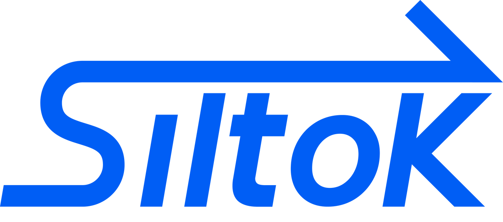

<!doctype html><html lang="zh-CN"><meta charset="utf-8"><meta name="viewport" content="width=device-width,initial-scale=1"><title>下载 Siltok Dash</title><style>body{font:16px/1.7 system-ui;color:#132344;background:#f7f9fd;margin:0}main{max-width:620px;margin:10vh auto;padding:32px;background:white;border:1px solid #dfe6f4;border-radius:20px}img{width:100px}h1{font-size:28px}button{background:#2859e8;color:white;border:0;border-radius:10px;padding:14px 26px;font-size:16px;cursor:pointer}button:disabled{opacity:.6}progress{width:100%;height:14px}small{overflow-wrap:anywhere;display:block;color:#60708b}a{color:#2859e8}@media(max-width:700px){main{margin:24px;padding:24px}}</style><main><a href="index.html"></a><h1>下载 Siltok Dash</h1><p id="name">正在读取安装包信息…</p><button id="start" disabled>开始下载</button><p id="status" role="status" aria-live="polite">准备就绪后，点击开始下载。</p><progress id="progress" value="0" max="100"></progress><small id="hash"></small><p><a href="index.html#steps">返回安装指南</a></p></main><script src="download.js"></script></html>